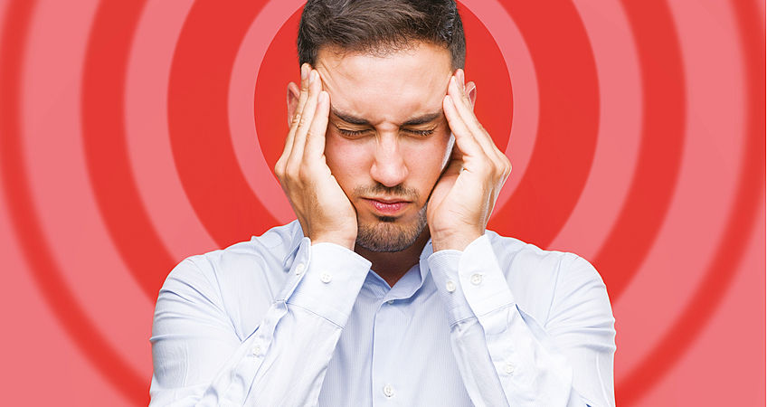
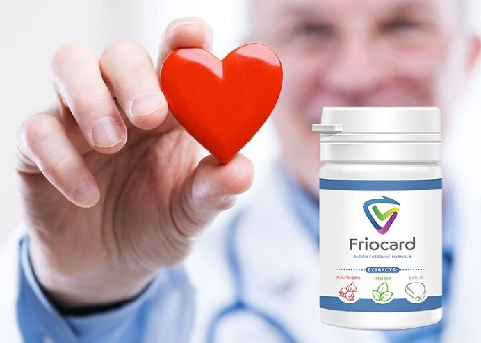
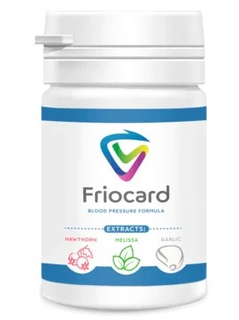
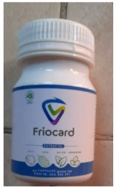
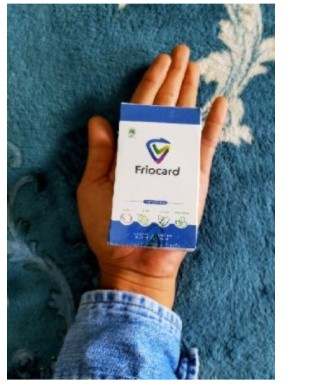
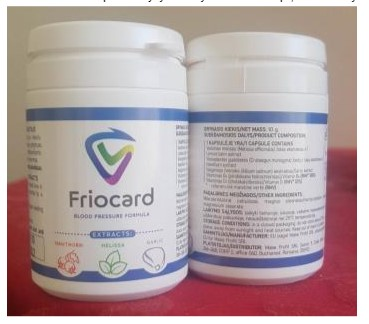
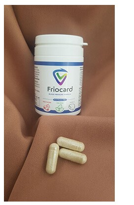

Stres w pracy i wysokie ciśnienie są ze sobą powiązane! 89% osób cierpiących na nadciśnienie umiera na zawał z powodu stresu
Stres jest odwiecznym towarzyszem naszego życia. Powstaje w wyniku nadmiernego napięcia nerwowego i psychicznego, przygnębienia, braku pozytywnych perspektyw lub stanu niepewności. Stres odgrywa ważną rolę w występowaniu nie tylko zaburzeń aktywności umysłowej osoby, ale także wielu chorób.
Rzeczywiście, stres psychiczny powoduje zwiększone uwalnianie hormonów, które zwiększają napięcie naczyniowe, zwiększają pojemność minutową serca, przyspieszają bicie serca i ostatecznie prowadzą do podwyższonego ciśnienia krwi.
Jak stwierdzić, że stres ma na ciebie negatywny wpływ? Istnieje wiele objawów i wszystkie różnią się w swoich przejawach.
Wszystkie dzwonki alarmowe można podzielić na cztery kategorie:
- Fizyczne – zawroty głowy, zaciśnięte szczęki, bóle głowy, zaburzone trawienie, napięte mięśnie, pogorszony sen, szybkie bicie serca, szum w uszach, przygarbiona postawa, pocenie się dłoni, zmęczenie, wyczerpanie, drżenie, przyrost lub utrata masy ciała.
- Psychologiczne – zmartwienia i lęki, trudności w podejmowaniu decyzji, zapomnienie, pesymizm, dewastacja.
- Emocjonalne – przejaw złości, agresji, płaczu, poczucia bezsilności, częste zmiany nastroju, drażliwość, poczucie samotności, negatywne myślenie, nerwowość, tęsknota.
- Zachowawcze – alkohol, narkotyki, przejadanie się, zmiana miejsca pracy, a nawet miejsca zamieszkania, jeśli jest taka możliwość.
Problem komentuje specjalista, profesor, kierownik Zakładu Chorób mięśnia sercowego i niewydolności serca dr n. med. Piotr Duchnowski
Stresująca sytuacja wyzwala w organizmie szereg procesów, których zadaniem jest wspierać organizm w trudnych okolicznościach. Ilość adrenaliny we krwi wzrasta, serce zaczyna pracować w trybie wzmocnionym, zasoby energii są podnoszone.
Zwiększa się liczba kwasów tłuszczowych i cholesterolu we krwi, jej lepkość, występują skurcze naczyń krwionośnych. Wysoki poziom cholesterolu powoduje zwężenie tętnic, ponieważ osadza się na ścianach naczyń krwionośnych. W rezultacie w historii choroby pojawia się miażdżyca, przez co serce jest słabo ukrwione, co oznacza, że nie otrzymuje wystarczającej ilości tlenu i składników odżywczych do normalnej aktywności. Dlatego po silnym lub długotrwałym stresie co drugi pacjent ma bóle serca.
Ponadto silny stres prowadzi do wzrostu zakrzepów krwi i nadciśnienia tętniczego. Zakrzep, który znalazł się w niewłaściwym miejscu w niewłaściwym czasie, może natychmiast doprowadzić do śmierci. Nadciśnienie tętnicze (podwyższone ciśnienie) w przyszłości staje się doskonałym podłożem do wystąpienia udaru mózgu.
Stres jest integralnym „towarzyszem” pełnoprawnego życia człowieka w metropolii, który dąży do realizacji we wszystkich dziedzinach życia. Pacjentom z podwyższonym ciśnieniem krwi, którego przyczyną mogą być stresy, konieczne jest odpowiednia terapia.
Jednak nawet na tle przyjmowania środków może wystąpić nagły nieoczekiwany wzrost ciśnienia krwi i rozwój kryzysu nadciśnieniowego. Ważne jest, aby zapewnić terminową pomoc.
Przede wszystkim samodzielnie wziąć odpowiedni środek. W rezultacie 20 minut po przyjęciu ciśnienie powinno spaść o 20-25%. Teraz istnieją środki, które "delikatnie" i skutecznie zmniejszają ciśnienie. Są to środki ratunkowe dla większości osób z nadciśnieniem, które najlepiej mieć pod ręką w domowej apteczce.
Aby przywrócić pracę układu sercowo-naczyniowego i zmniejszyć ciśnienie do normy wiekowej bez wymuszonego rozszerzania naczyń krwionośnych, zalecam stosowanie środek nowej generacji o nazwie Friocard. Środek ten jest całkowicie bezpieczny, nie ma skutków ubocznych i można go przyjmować bez nadzoru specjalisty.
Friocard działa w 3 etapach:
1. Eliminuje niepokój, lęk, strach, wewnętrzne napięcie emocjonalne, pocenie się, kołatanie serca, uczucie duszności
2. Choroby takie jak: nadciśnienie, bóle głowy, żylaki, zakrzepica i hemoroidy są całkowicie lub znacznie złagodzone. Szum w uszach, zawroty głowy, obrzęki znikają, poprawia się ostrość wzroku i jasność myślenia. Normalizuje się waga i metabolizm tłuszczów.
3. Poprawia wytrzymałość i elastyczność ścian naczyń krwionośnych. Zapobiega to tworzeniu się nowych płytek i 11-krotnie zmniejsza ryzyko udaru mózgu.
Efektowi Friocard NIE towarzyszy zwiotczenie mięśni, senność i zaburzenia koordynacji, środek też nie zmniejsza aktywności umysłowej i ruchowej, dlatego może być stosowany w ciągu dnia roboczego lub nauki.
Kapsułki Friocard można łączyć z innymi środkami. Nie powoduje uzależnienia i zespołu odstawienia. Friocard charakteryzuje się szybkim działaniem: maksymalne stężenie we krwi po 20 min. Środek nie jest toksyczny, można go łączyć z innymi środkami.
W celu dystrybucji Friocard stworzyliśmy specjalny oddział, który zajmuje się przetwarzaniem wniosków. Każdy, kto chce otrzymać Friocard z dostawą, musi podać swoje imię oraz dane kontaktowe. Następnie z Państwem skontaktuje się konsultant i ustali dogodny termin dostawy. Staraliśmy się zrobić wszystko tak proste, jak to możliwe, aby każdy mógł dostać produkt, nawet jeśli wcześniej nic nie zamawiał przez Internet.
Dystrybuujemy Friocard od 2 miesięcy. W tym czasie otrzymaliśmy wiele listów z podziękowaniami od osób cierpiących na podwyższone ciśnienie. To po raz kolejny dowodzi, że PRODUKT NAPRAWDĘ POMAGA OSOBOM CIERPIĄCYM NA NADCIŚNIENIE WYGODNIE PRZETRWAĆ ZIMĘ BEZ RYZYKA ZAWAŁU SERCA I UDARU MÓZGU !
Specjalnie dla naszych czytelników zamieszczamy formularz zamówienia Friocard
ABY ZAMÓWIĆ FRIOCARD PODAJ:
Oferta specjalna obowiązuje do końca dnia 09.11.2021
KOMENTARZE:
Katarzyna Raszka
W pracy ciągle mam do czynienia ze stresem i cierpię z powodu skoków ciśnienia. Ciekawy artykuł, nawet nie sądziłam, że stres tak wpływa na organizm człowieka.
Jakub Bazelak
Czytałem o tym produkcie w jakimś czasopiśmie medycznym. Wydaje mi się, że to był artykuł jakiegoś znanego specjalisty w dziedzinie kardiologii!
Piotr Raczyński
Jak tylko ciśnienie zaczęło mnie dokuczać, zwróciłem się do specjalisty. On polecił mi Friocard jako nowoczesny i niedrogi środek. Cena naprawdę mile mnie zaskoczyła i środek dobrze mi pomógł. Teraz biorę 1 pigułkę dziennie i zapomniałem o skokach ciśnienia.
Paulina Jakubiak
Nadciśnienie nie jest przyjemną chorobą. Ciągle brałam różne środki przeciwnadciśnieniowe, a ostatnio zaczęłam stosować Friocard – raz zdecydowałam się na zakup i od razu mi się spodobał. Środek naprawdę działa, bardzo dobrze utrzymuje ciśnienie w granicach normy, zażywam jedną pigułkę rano i jedną w ciągu dnia, jeśli nie narażam się na niepotrzebny stres, to wszystko utrzymuje się w normie.
Krystyna Krzekotowska
W zeszłym miesiącu mama została zabrana karetką w stanie przed zawałem. Lekarze powiedzieli, że ten stan był spowodowany skokami ciśnienia. Od tego czasu ciągle stosowała tabletki, cały czas była zdenerwowana i mierzyła ciśnienie krwi 30 razy dziennie… Po prostu nie ma czasu na normalne życie! Jesteśmy gotowi kupić ten produkt za wszelkie pieniądze, aby tylko był skuteczny i pomógł mojej mamie!!!
Michał Teodorowicz
Nigdy nie słyszałem o tym produkcie, ale chcę spróbować złożyć zamówienie.
Dominika Chruściel
Od pół roku żyję w stresie - wieczorem wzrasta ciśnienie u męża. Za każdym razem wzywamy karetkę i modlimy się, aby zdążyli przyjechać... Tydzień temu zamówiłam Friocard i zdarzył się cud! Po pierwszym dniu stosowania ciśnienie przestało tak gwałtownie wzrastać. W końcu widzę uśmiech na jego twarzy. Dziękuję za ten produkt!
Piotr Górecki
Skoki ciśnienia są już nie do zniesienia. Dyskomfort i ból nie dają życia. Nie wiem, co robić. Biorę różne środki, ale nie pomagają.
Łukasz Domański
Powiem szczerze, świetny środek! Zamówiłem go od razu po przeczytaniu tego artykułu. Kiedy otrzymałem Friocard natychmiast zacząłem brać. Poprawę zdrowia zauważyłem już tego samego wieczoru. Ciśnienie wróciło do normy. I nie mówię "normalne" z punktu widzenia osoby, która przez długi czas cierpię na nadciśnienie, mam na myśli "normalne" jak dla zwykłego zdrowego człowieka. Stan po zażyciu jest po prostu wspaniały. Pojawiły się siły i poprawił się sen.
Jan Sulanowski
Podpisuję się pod każdym słowem - Friocard jest cudowny, jeden z najbardziej ekonomicznych i skutecznych środków! Sam osobiście się o tym przekonał.
Beata Szydlewska
Mam nadciśnienie tętnicze, a także niewydolność serca, stale muszę przyjmować środki. Friocard jest moim wybawcą, ciągle go noszę, pomaga mi szybko zmniejszyć zwiększone ciśnienie i odciążyć serce. Środek jest niedrogi, pomaga dość szybko, ból głowy znika dosłownie po 5 minutach.